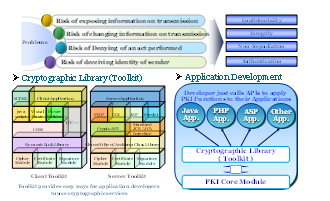

La sécurisation des applications
La dématérialisation de nombreuses procédures administratives envisagée est déjà effective depuis un certain temps au Cameroun, donnant ainsi naissance aux téléprocédures telles que le paiement en ligne des taxes et droits de douanes du Guichet Unique des Opérations du Commerce Extérieur, la télédéclaration de la Caisse Nationale de la Prévoyance Sociale (CNPS), le paiement en ligne de la Taxe sur la Valeur Ajoutée, ou encore la déclaration d’impôts via Internet…
Avec l’avènement puis la réalisation de telles initiatives, il ne s’agit plus simplement de vérifier l’identité de l’individu par le biais d’une authentification forte ou de garantir qu’une information ne peut être accessible qu’aux seules personnes habilitées, dans le cadre de la confidentialité des échanges. Il convient désormais également de s’assurer que d’une part, les données transmises n’ont pas été modifiées par un tiers : intégrité des données échangées, et que d’autre part, une organisation ou un individu impliqué dans un échange ne puisse pas nier son rôle dans l’échange : la non-répudiation.
Il y a donc lieu de sécuriser les applications elles-mêmes et toutes les transactions en ligne dans lesquelles sont impliqués lesdits systèmes.
L'intégration des fonctions cryptographiques dans une application
La sécurisation repose sur l’intégration des fonctions cryptographiques dans une application. Il s’agit d’une technique qui consiste en :
- la conduite des séances de travail en vue de la collecte des informations sur les applications candidates à la sécurisation ; Voir le questionnaire sur la sécurisation
- le choix des toolkits (sortes de bibliothèques et d’API de sécurité) ; Voir le formulaire de demande des toolkits
- l’analyse ou le design des flux et autres activités du système à sécuriser pour mieux comprendre son mode de fonctionnement ;
- l’intégration du toolkit dans le serveur d’application et dans le client pour lui permettre de supporter :
- le chiffrement/déchiffrement des données ;
- la signature électronique et la vérification des signatures ;
- l’identification formelle en ligne des internautes en communication ;
- les algorithmes de sécurité ;
- le protocole CMS (Cryptographic Message Syntax) ;
- le protocole LDAP ;
- le protocole OCSP ;
- le protocole TSP ;
- les supports de sauvegarde des certificats et des clés associées ;
- les activités de plusieurs navigateurs ;
- la longueur de clé conventionnelle.
- le développement ;
- la formation des développeurs,des éditeurs d’applications et des opérateurs de l’autorité d’enregistrement locale ;
- les tests de fonctionnalité ;
- les activités d’émission de certificats.

La sécurisation des applications se fait par intégration des fonctions cryptographiques de façon active ou de façon passive.
L'Intégration active
L’intégration des fonctions cryptographiques et d’accès à la PKI peut se faire au sein même de l’application, lors de son développement ou même après. Il s’agit dans ce dernier cas d’une intégration "active" des modules de sécurité, directement au sein du code source de l’application.
La fonction d’intégration active du toolkit client et du toolkit serveur, ainsi que le développement de l’application qui s’en suit sont du ressort de l’éditeur qui est seul habileté à intervenir dans son application pendant que celle-ci est en production pour des questions d’éthique et de propriété intellectuelle.

Principe d’intégration active
L’intégration active des mécanismes de sécurité au sein des applications s’appuie sur des toolkits de développement ou SDK (Software Development Kit) généralement disponibles pour les langages C/C++, Java, DotNET, PHP... Ces kits fournissent aux développeurs différents niveaux d’interface de programmation (API), que l’on peut classer en trois types :
- des API orientées application : il s’agit de kits de développement permettant l’implémentation des protocoles normalisés comme SSL, TLS, S/MIME ou encore la sécurisation des documents au format XML ;
- des API de bas niveau fournissant des fonctions cryptographiques élémentaires comme le chiffrement, le hachage ou l’encodage ;
- des API intermédiaires permettant de rendre une PKI compatible avec une application.
Ces API permettent d’une part, à l’application d’exploiter l’infrastructure de confiance pour valider les certificats. Elles offrent ainsi des librairies clientes permettant de récupérer et de traiter les listes de révocation des certificats, de développer un client Online Certificate Status Protocol (OCSP), de lire le temps à l’aide du client Time Stamping Protocol (TSP), d’accéder à l’annuaire LDAP, de vérifier la chaîne complète de certification, de vérifier une signature numérique, de signer électroniquement des transactions, de chiffrer et de déchiffrer les flux d’informations en ligne. Ces API permettent d’autre part, à une application de définir elle-même son propre protocole de sécurisation des échanges. Ce dernier s’appuie sur des fonctions ou classes mettant en œuvre les mécanismes d’émission de la signature électronique/vérification de la signature électronique ou de transport sécurisé des données.
L’intégration des toolkits permet à l’application d’avoir un contrôle total des mécanismes de sécurité : instauration d’une session SSL, type des algorithmes de chiffrement, taille des clés, etc... Cette approche est sûre mais onéreuse. Elle induit une adhérence certaine entre les applications développées et le kit de développement utilisé.
Nous décrivons ci-dessous deux exemples de sécurisation d’application : la sécurisation de la messagerie et la sécurisation d’application Web sur HTTP.
La sécurisation par insertion du toolkit dans un serveur-relais : Intégration passive
L’approche "Reverse-proxy" permet de sécuriser sans modification de code source de nombreuses applications, dont certaines applications basées Web. Néanmoins, l’ajout de composants complémentaires, généralement des agents, se révèle dans la pratique souvent inévitable.
Par construction, ce serveur-relais constitue un point de passage obligé : il centralise un certain nombre de vérifications concernant le certificat présenté par le client à l’instar de la vérification de la signature du certificat, du statut… avant de relayer les flux applicatifs vers des applications ou serveurs cibles.
Ce serveur relais peut, selon les cas et les offres, assurer, au-delà du service d’authentification, de SSO (Single Sign On = authentification une seule fois pour l’accès à de multiples applications), voire de gestion centralisée des habilitations des utilisateurs.
Sécurisation des applications Web
Dans le cas d’une application Web, l’intégration de "toolkit" au sein du serveur HTTP et du navigateur permet de pallier les lacunes actuelles des implémentations natives de SSL. Les modules logiciels ajoutés peuvent, suivant les offres, assurer eux-mêmes des vérifications complémentaires ou bien les déléguer à un serveur central de sécurité.
Dans le premier cas, le "toolkit" ajouté sur le serveur Web joue le rôle d’un filtre d’accès au serveur HTTP et donc, le cas échéant, au serveur d’application cible dans une architecture 3-tiers. Ce toolkit "serveur" peut permettre, avant d’accéder à l’application, de valider la chaîne de certification et le statut de révocation du certificat client.
- en mode "asynchrone" : récupération de CRL via un protocole de transport comme HTTP ou LDAP
Ainsi, le processus complet d’authentification est délégué au serveur Web. Pour effectuer ses contrôles d’accès, l’application se contente de récupérer certaines données relatives à l’identité de l’utilisateur ou au certificat à l’aide d’API.
Les offres des fournisseurs de solutions de sécurité sur le marché proposent un type de toolkit pour les principaux serveurs http. Notamment : Microsoft IIS, Iplanet Entreprise Server et Apache. Le fonctionnement du toolkit client, pour navigateur, est similaire et étend donc les mécanismes de sécurité natifs des navigateurs standards, Microsoft Internet Explorer et Netscape Communicator.
À lire aussi: la sécurisation des applications par développements spécifiques
À lire aussi: La problématique d’une authentification forte